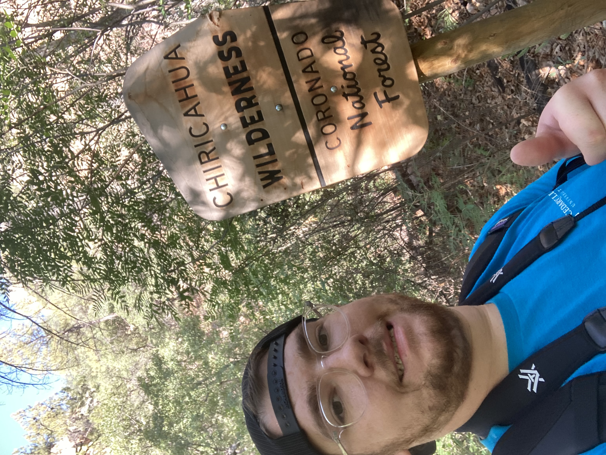
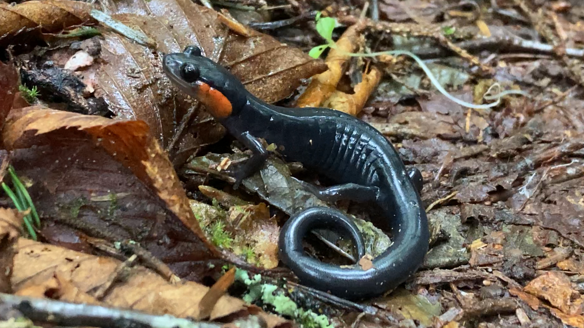
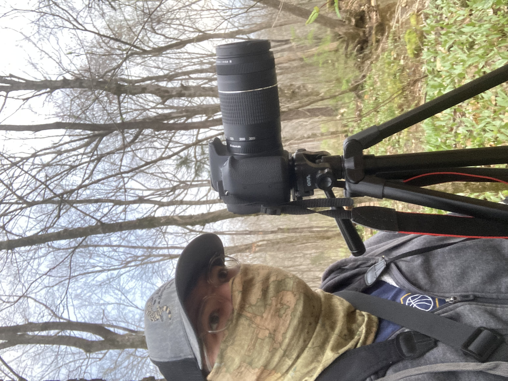
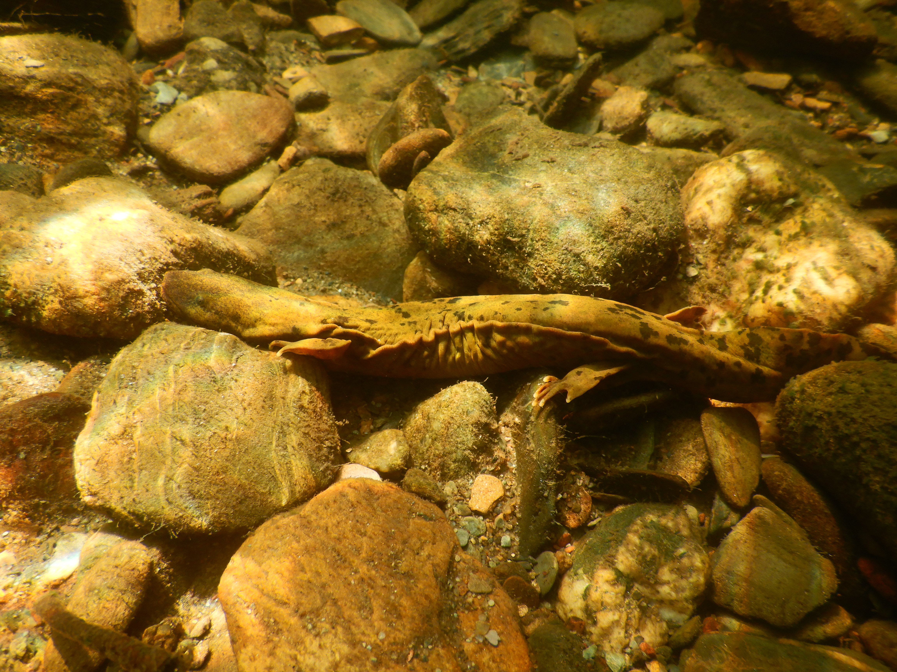
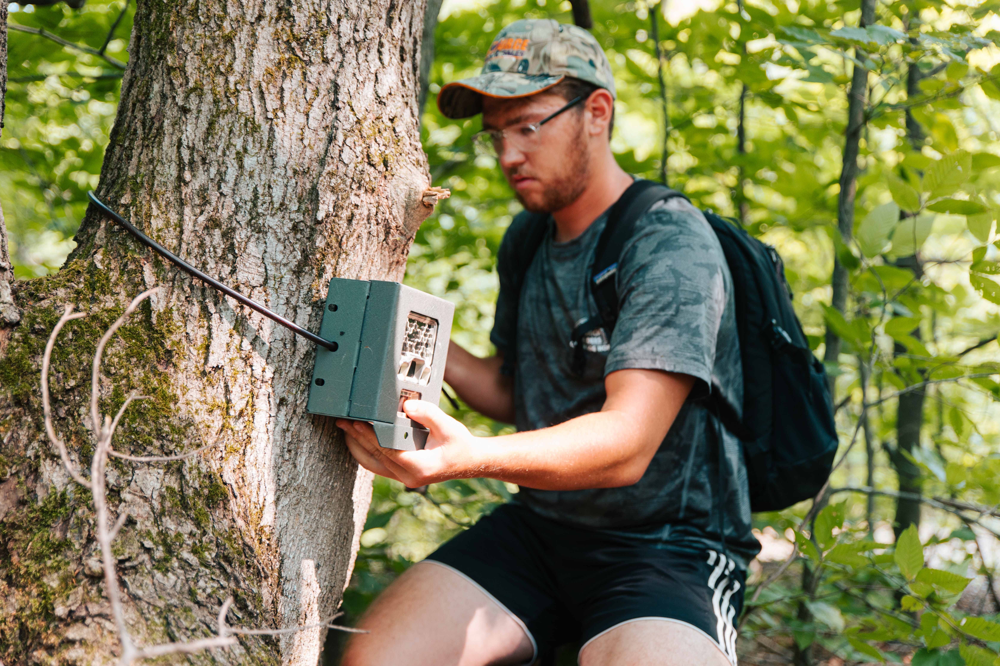
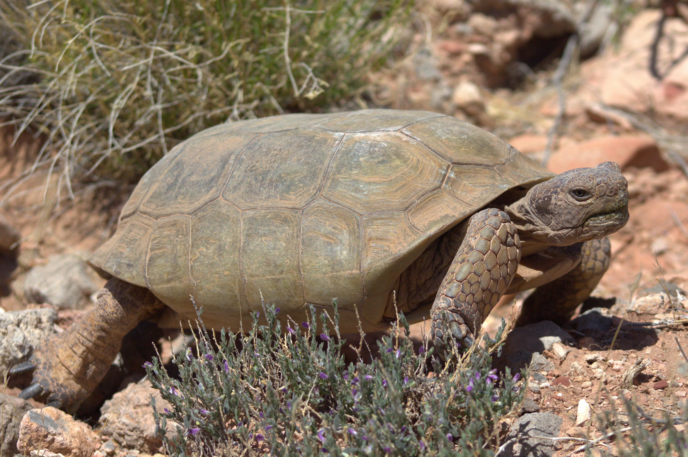
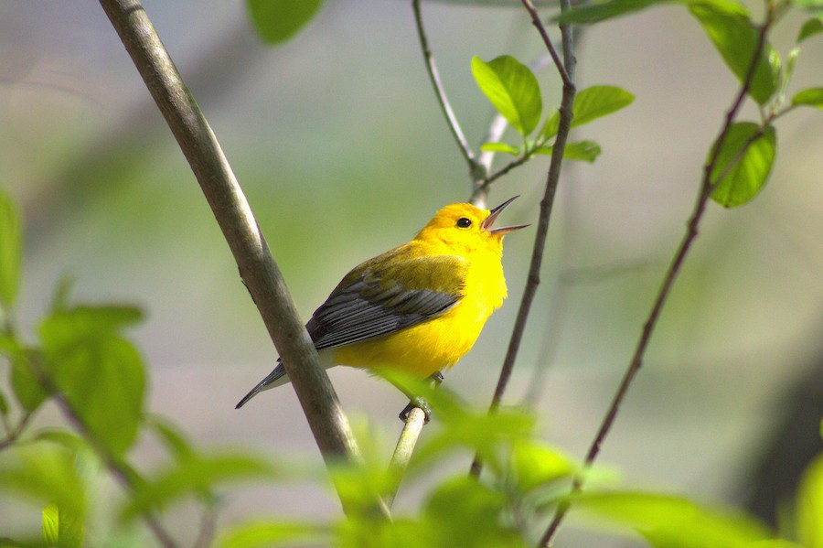
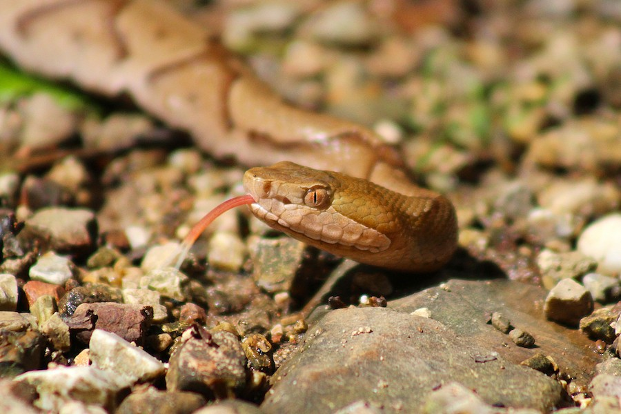

  
My personal research interests are primarily focused in the realm of conservation biology and wildlife ecology for taxa such as herpetofauna, birds, and fishes. I am also interested in conservation efforts for species facing increased extinction risk due to human activities at the population and habitat levels.I am also passionate about wildlife education, teaching the public about the natural world around them and how to care for it.

From August 2023 to May 2025, I pursued my masters degree in biology in Dr. Chris Gienger’s lab at Austin Peay State University in Clarksville, TN. My thesis research sought to determine the distribution of the Gila Monster (Heloderma suspectum) across its range in the American Southwest and northern Mexico and compare this distribution with natural protected areas (PNAs). The Gila Monster is a cryptic, long-lived desert lizard in need of conservation management due to its specialist diet and habitat. I developed a species distribution model using the MaxEnt modeling algorithm and utilized PNA data from the United States Geological Survey’s Gap Analysis Project (USA) and Protected Planet (Mexico) to perform the overlap analyses. Our results have since been published in the Journal of Nature Conservation here.
From August 2018 to May 2022, I pursued my bachelors degree in biology with an emphasis in wildlife ecology at Cedarville University in southwestern Ohio. Here I completed courses relevant to my professional interests such as GIS, ecophysiology, conservation biology, vertebrate anatomy and physiology, and biological research. I also attended the AuSable Institute in northern Michigan in summer 2021, completing course and field work in wildlife ecology and fish ecology and management. As an upper classmen, I worked as a lab assistant for Dr. Michael Mendel and participated in several of his research projects, including an Ohio statewide survey of diversity in Family Chironomidae and assessing freeze tolerances in various frog species as a tech involved with specimen collection and dissection.

I was born and raised in southwestern South Dakota, within easy access of natural wonders like Wind Cave National Park, the Black Hills, and Badlands National Park. It is no surprise that I spent most of my childhood enamored with the outdoors, specifically with large mammals. When I traveled east to pursue my degrees, my interests shifted to smaller taxa such as birds and herpetofauna. In my spare time, I enjoy outdoor activities such as hiking, birding, fishing, and freshwater snorkeling. I have also recently become an amateur wildlife photographer (see below for some of my favorite shots).
  